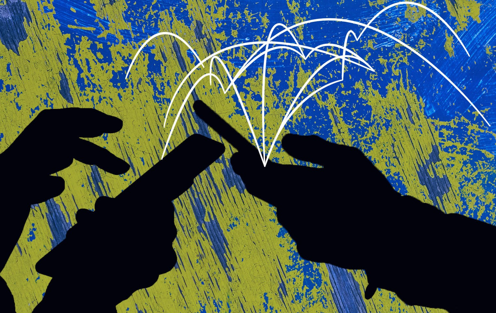

History of Social Media
Social media is defined as any internet-based platform, including those which can be accessed with an app, through which users are able to create and share content that is accessible to members of the public. This will provide a brief overview of the history of social media and some of the most popular platforms.
1970s - Since social media must use online communication, the history of social media starts with the emergence of the internet in the 1970s.
1980-90s - In the 1980s and 90s, personal computers became more popular, which created an environment for social media platforms to be successful. Bulletin board systems and blogging also emerged for people to share what they were thinking and doing.
1997 - The first social media platform was released in 1997. Six Degrees allowed users to make individual profiles and add friends to their personal network.
2002 - Shortly after Six Degrees’ shut down in 2001, Friendster emerged. It was similar to Six Degrees, but also allowed users to share photos and videos, message friends, and comment on friend’s profiles. Friendster reached over 100 million users before it rebranded as a social gaming site in 2011. LinkedIn was also founded at the end of 2002. Its focus has always been on professional networking, and it still remains a popular site for that purpose today.
2003 - 2003 was the launch of MySpace, the largest and most influential of the first social media platforms. While it started as a file storage system, it quickly became an online social network that connected millions of users worldwide. MySpace still exists today, but it has declined in popularity due to competition with other social media platforms.
2004 - Facebook started as a site exclusive to Harvard students. It quickly expanded to other universities and then anyone above the age of 13 in 2006. Facebook has consistently grown in number of users since its launch and remains the most popular social media platform in the world.
2006 - Twitter, created in 2006, is known for limiting users to posts of 280 characters or less. This has distinguished Twitter from the many competitors and led to 335 million monthly active users.
2010 - 2010 was the launch of Instagram. Instagram started as an app focusing on photo and video sharing. It has grown quickly and added a plethora of more features as well.
2011 - Snapchat started in 2011. Its unique feature was that users can send photos to friends that disappear after being opened. It also allowed users to chat with friends and post to a 24-hour story. Snapchat is particularly popular among young people.
Overall, the history of social media is short in terms of time. It has been extremely influential and is often a part of how friends and family connect. Today, Instagram, Facebook, and Twitter dominate the market, but these companies and the history of social media will continue to evolve.
|
|
|
|
Social Media in Global Conflicts
The use of social media and technology have become one of the main sources of information and communication during conflicts.
First, social media has given influencers and political actors a platform to influence others’ values. Groups or individuals can create impactful,
effective content to gain support for certain objectives, which has shaped global opinions and incorporated “winning” over target audiences as a part of warfare.
Social media can also be used for conflicts in a few key ways. As mentioned above, news distribution and consumption has increased on social media without guidelines.
Guidelines are important for limiting harm and ensuring the accuracy of information. Social media also tends to give people content they agree with which
confirms and radicalizes their world views, creating a greater divide. Additionally, fake news seen on social media has negatively affected behavior and can even escalate conflicts.
During “windows of risk”, a time-frame of increased danger during conflict, the danger of the effects of social media as a weapon are more pronounced.
Online and social media threats can spread to non-social media users, which creates an additional risk for offline violence. Lastly, social media can create
risks to peacebuilders and those involved in humanitarian efforts through personal attacks on social media and by interfering with global dynamics.
There are mixed views about social media and how it has affected global conflicts. A survey of 19 countries revealed that 57% of people say social media is a good thing for democracy,
but in general adults are less likely to agree with this. People are also less likely to agree if they view the spread of false information online as a major threat.
Overall, the majority of people recognized that more information about current events globally and nationally is a positive outcome of social media.
The majority also believed that social media is effective at raising awareness, changing people’s opinions, and influencing policy. A negative outcome of social media that the majority recognized
is that it’s easier to manipulate others and create more of a divide in political opinions.
It’s important to note that modern fake news is quite different from fake news in its historical form. Now, individuals with ideological interests or those looking to
make money are creating and spreading fake news. They distort both the content and the news source. This is enabled because social media presents all news from anyone and
allows stories to easily be shared and forwarded, which makes it hard to know the source and credibility of a story. False stories are not obvious when they appear out of context in social media or web-based news.
|
Russia & Ukraine War
What is the Current Conflict in Ukraine and Russia?
Tensions between Ukraine and Russia have been high for over a century, beginning roughly at the time of the
Russian Revolution in 1917. One major spark that helped ignite the current conflict between Urkaine and Russia
began in 2014 when Russia formally annexed Crimea, a small peninsula connected to Ukraine in the Black Sea.
Further disputes and tensions between the two countries continues to escalate until coming to a head in February 24, 2022
when Russia invaded Ukraine. Russia's claims for invading Ukraine include "demilitariz[ing] and dinazify[ing] Ukraine
and end the alleged genocide of Russians in Ukraine territory."
What Role Does Social Media Have in Reporting on the Conflict?
Similar to journalism during the Holodomor, governments, namely Russia, have used to social media to limit the amount
of information that reaches its citizens. The Russian government has banned websites such as Facebook and X (formerly Twitter)
while heavily heavily censoring TikTok and YouTube. Throughout the conflict, Russian citizens have mainly relied on
sites like Vkontakte, Telegram, and Yandex for their news. All three sites are heavily monitered by the Russian government
with "Posts on Vkontakte that mention the Ukraine war are immediately taken down and groups that deviate from the Kremlin's
message have been deleted."
Those outside the countries involved are still at risk of consuming false information via social media. For example,
"researchers found that TikTok directed users to false information about the war within 40 minutes of signing up.
New users on TikTok were shown videos claiming that... clips from a video game were real footage of the war." Also,
with increased popularity of chatbots and deepfakes, citizens and governments can create false news events that could
persuafe millions of people to believe one narrative of the war over another.
|

|
|
|
Israel Palestine Conflict
What is the current Israel Palestine Conflict?
Ever since the Nakba and the creation of Israel in 1948, tensions between the two groups have persisted. On October 7, 2023, a significant escalation occurred when Hamas launched a surprise attack on Israel. This marked the deadliest massacre of Israeli civilians in the country's history, with over 1,300 people killed and approximately 150 hostages taken back into Gaza. In response, Israel declared war on Hamas and initiated airstrikes on Gaza. The international community expressed concerns for civilian safety, with approximately 1,300 Israelis and 10,000 Palestinians killed in the first month of fighting. The situation prompted a strong show of support for Israel from President Joe Biden, leading the United States to give supplies to the Israeli army. Fears of regional expansion continue to grow, as Israel exchanged fire with Iran-backed Hezbollah, Yemen's Houthi rebels launched missiles at Israel, and the Islamic Resistance of Iraq, backed by Iran, claimed responsibility for attacks on U.S. military targets. Developments post-October 7 include ongoing hostilities, a ground invasion of Gaza City starting on October 28, and a deepening humanitarian crisis with severe shortages of essential resources and 10,000 Palestinian deaths reported. Egypt and Jordan continue to be hesitant to accept displaced Palestinians, fearing potential conflict triggers and infiltration by Hamas. Limited exits from Gaza left a majority of the population displaced, facing worsening conditions and security risks.
What is Hamas?
Hamas, short for Harakat al-Muqawamah al-Islamiyya (Islamic Resistance Movement), was formed in 1987 during the First Palestinian uprising against the occupation. The organization emerged in the context of the broader Palestinian resistance movement and aimed to address socio-political issues faced by Palestinians. The roots of Hamas can be traced back to the Palestinian branch of the Muslim Brotherhood, a transnational Islamic organization. In 2006, Hamas participated in the Palestinian legislative elections and achieved a significant victory, winning a majority of seats in the Palestinian Legislative Council. Hamas's victory in the elections led to its formation of a government in the Palestinian territories. However, this triggered tensions with the Fatah party, which eventually escalated into internal conflict, resulting in the division of Palestinian governance between the West Bank, led by Fatah, and the Gaza Strip, controlled by Hamas. It's important to note that views on Hamas vary widely, with some regarding it as a legitimate resistance movement, while others, including Israel and some Western countries, designate it as a terrorist organization due to its use of violence against civilians. The complexities of the Israeli-Palestinian conflict contribute to differing perspectives on the actions and legitimacy of groups like Hamas.
How is Social Media involved in this conflict?
Amidst the ongoing conflict, social media platforms have become places of online hate and racism targeting both Palestinian and Jewish communities. Amnesty International has called upon major social media companies to address the surge in such content, emphasizing the rise in incitement to violence that violates human rights laws. The organization also notes potential discriminatory content moderation against Palestinian posts, underscoring the crucial need for enhanced measures to protect human rights and prevent the dissemination of messages promoting violence. Importantly, this surge not only signifies an increase in hate but also raises concerns about how people access information during conflicts. An opinion piece by a non-Jewish or Palestinian author reflects on the complexity of making public statements about the conflict on social media, cautioning against oversimplified declarations that reduce intricate issues to a binary choice. In the context of content suppression, concerns are raised about "shadowbanning," especially regarding posts related to Palestine, limiting visibility without complete banning. The Israeli government's social media campaign, featuring graphic ads to gain support for its military response against Hamas, poses challenges to platforms and reflects a broader trend of governments leveraging online advertising to shape their image during crises. This collision of traditional war-time PR tactics with social media dynamics raises questions about the intersection of information dissemination and conflict narratives.
|